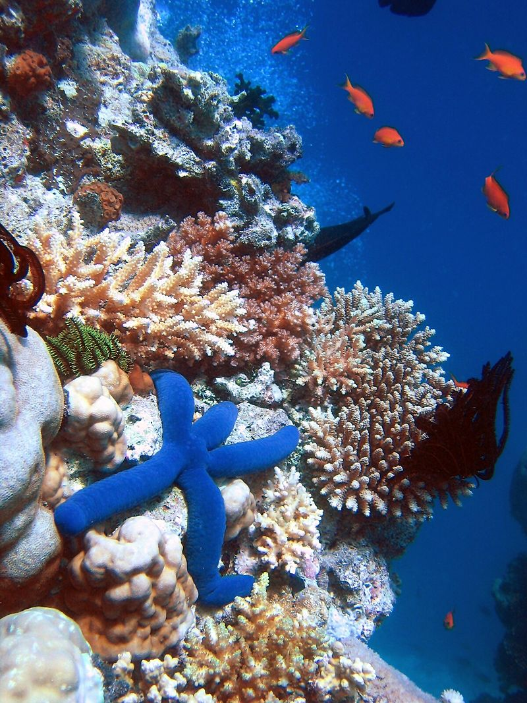

The ecosystem is the interaction between organism in a given community landscape. Ecosystems can be marine based, land based, or air based. Ecosystems are controlled by external and internal factors.
External Factors
Internal Factors
Ecosystems are dynamic entities and they are subject to periodic disturbances and are always in the process of recovering from some past disturbances. The tendency of an ecosystem to remain close to its equilibrium state, despite that disturbance, is termed its resistance. The capacity of a system to absorb disturbances and reorganize while undergoing change so as to retain essentially the same function, structure, identity, and feedbacks is termed its ecological resilience. Ecosystems can be studied through a variety of approaches-- theoretical studies, studies monitoring specific ecosystems to elucidate how they work.
